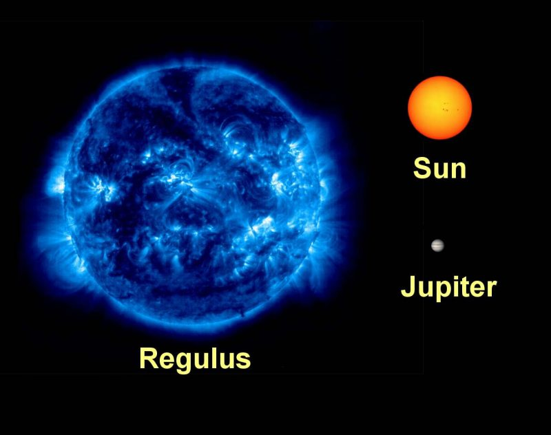

Regulus
- Regulus is best seen during the late winter and spring from northern hemisphere.
But except for a month on either side of August 22nd, the star is visible in the sky at different elevations and positions throughout the year.
- One other major effect of Regulus’ high spin rate is “gravity darkening”
A phenomenon which has resulted in the photosphere of Regulus being lot hotter at the polar regions than elsewhere, and these regions being at least five times as bright as the stars’ equatorial regions per any given unit of area.
- Regulus is a multiple star system
Consisting of at least four stars.
- The traditional name Rēgulus is Latin for 'prince' or 'little king'.
- The last occultation of Regulus by a planet was on July 7, 1959, by Venus.
The next will occur on October 1, 2044, also by Venus.
| Diameter |
4.4 million km |
| Luminosity |
288 x Sun |
| Distance From Earth |
79.3 light years |
| Constellation |
Leo |
| Temperature |
12,186 °C (21,968 °F) |
| Mass |
3.8 x Sun |
| Age |
1 billion years |

{kind=link}